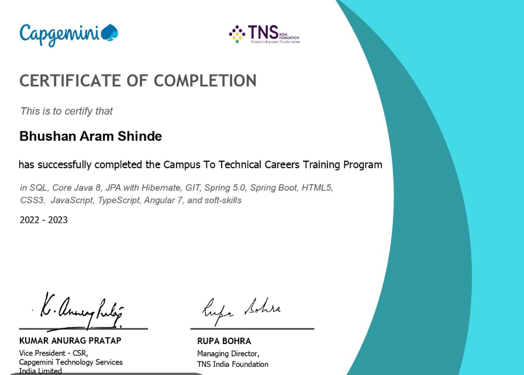
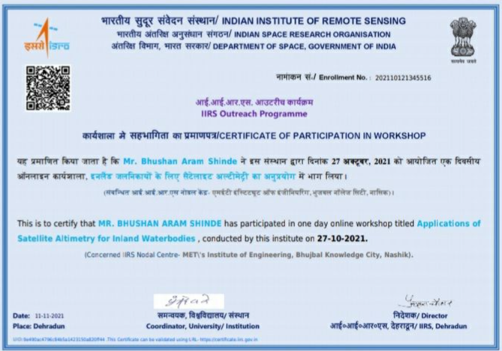
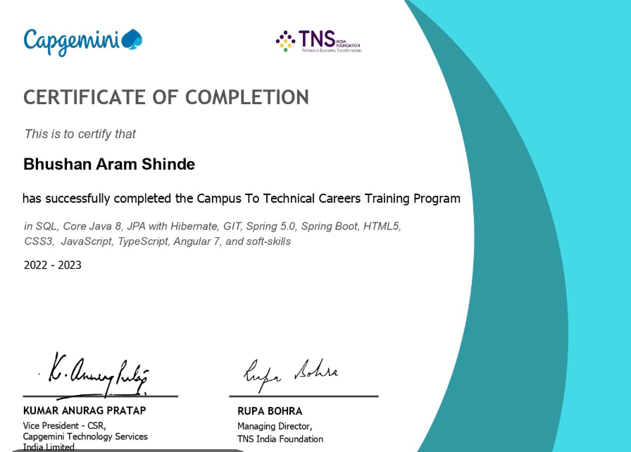
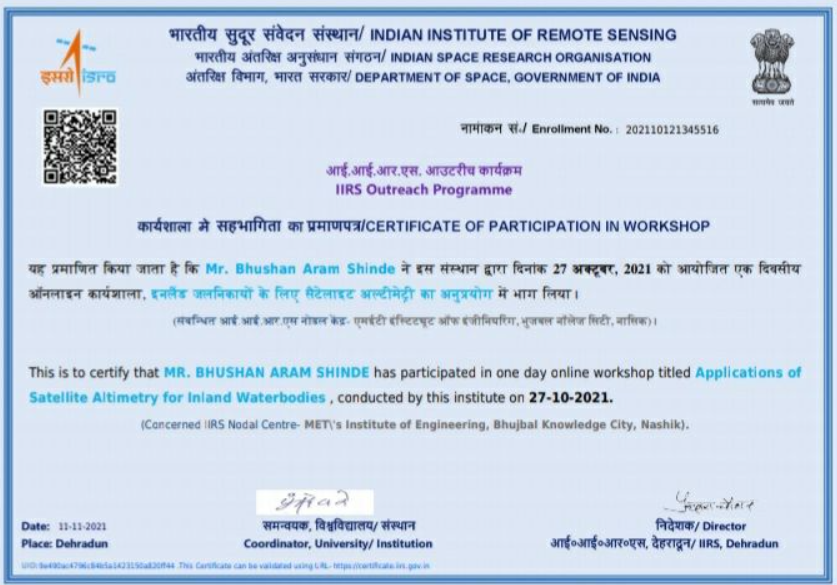

About Me
Bhushan Shinde
Skilled ERPNext & Frappe Developer with deep experience architecting, customizing, and deploying enterprise-grade ERP solutions. I specialize in designing scalable backend architectures using Python and Frappe Framework, implementing RESTful APIs, and integrating third-party services for seamless business automation. My work includes advanced server-side scripting (Python, JS), custom DocType creation, and workflow automation for complex modules such as Procurement, Subcontracting, and Inventory.
I excel at optimizing ERPNext performance through SQL query tuning, MariaDB management, and Linux server administration. My technical toolkit covers Frappe Insights for real-time analytics, custom dashboards, and data visualization, empowering stakeholders with actionable intelligence. I have delivered robust solutions involving role-based access, permission scripting, and automated notifications, ensuring compliance and security.
Additionally, I am proficient in virtualization (VMware), cloud deployment, and CI/CD pipelines for ERPNext, enabling rapid, reliable delivery in production environments. My expertise extends to troubleshooting, migration, and scaling ERPNext instances for high-availability enterprise use.
Hire me →.jpg)


 


